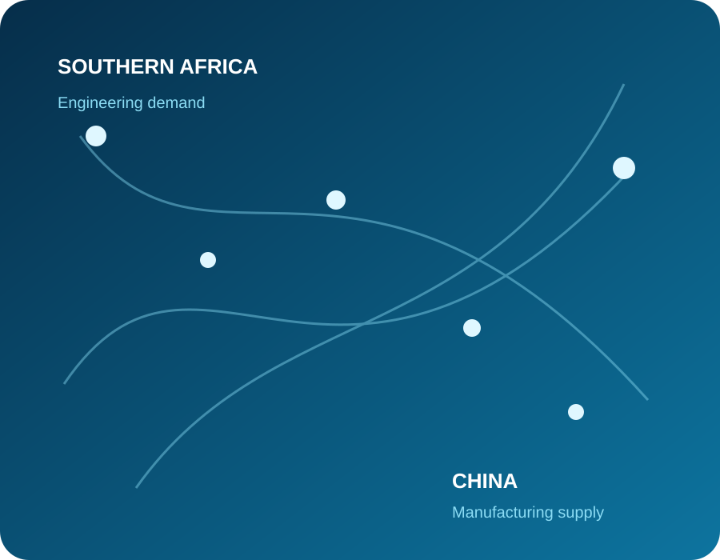

01
Technical Fit
We start from the actual RFQ, BOQ, specification or drawing so the proposed supply route is built around the real requirement.
HONVAX connects Southern African engineering and industrial buyers with suitable Chinese manufacturers — supporting product supply, sourcing, quality control and delivery coordination.

Competitive factory pricing only matters when the product fits the specification and the complete supply plan is commercially workable.
We start from the actual RFQ, BOQ, specification or drawing so the proposed supply route is built around the real requirement.
Suitable manufacturers are developed for the specific requirement rather than selected from a generic supplier directory.
Price is considered together with quality, lead time, packaging, freight, duties and delivery responsibility.
We focus on categories where Chinese manufacturing can offer a practical technical and commercial supply option.
Grid materials, cable accessories, project-power equipment and selected electrical products.
View industry →Valves, pipes, fittings, metering, pumps and selected water-project equipment.
View industry →Wear parts, screening products, fasteners and planned maintenance requirements.
View industry →Steel, pipework, fasteners, fabricated items and coordinated material packages.
View industry →The detail changes by product and project, but the purchasing logic remains clear.
Understand scope, specification, quantity, timing and missing information.
Develop suitable Chinese manufacturing and supply options.
Assess technical fit, commercial terms, lead time and supply risk.
Coordinate the agreed order, quality requirements, documents and delivery.
HONVAX Trading (Pty) Ltd supports engineering and industrial procurement by combining local customer coordination with China-side sourcing and supplier management.
Send the available documents and let us assess the most practical next step.